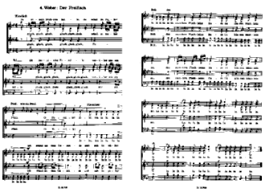

|
Wir beginnen gerade die Proben für unser neues
Konzert Starlight.
Wir haben schon einige Stücke dafür von Bruckner, den Beatles, Schubert, Rammstein, Johann Schulz, Monteverdi, Queen, Erik Esenvalds, David Bowie und Justin Hurwitz, aber wir sind noch auf der Suche nach weiteren passenden Ideen, insbesondere klassischen Stücken.
Vorige Projekte
Die schönsten Stücke unserer vorherigen Projekte werden in einer Favoritenliste
gesammelt, auf die wir gerne zu Anlässen wie Geburtstagen oder besonderen
Danksagungen zurückgreifen. Aktuell gibt es auf der Liste:
- Joseph Rheinberger
-
- Abendlied
- Toto
- Africa
- Johann Sebastian Bach
-
- Air
- Queen
- Bohemian Rhapsody
- Juli
- Die perfekte Welle
- Stefan Nilsson
- Gabriellas sång
- John Conahan
- Love of Fire
- Lorde
- Royals
- Pentatonix
- Run to you
- Eric Whitacre
- Seal Lullabye
- Adele
- Skyfall
- Waldemar Ahlen
- Sommarpsalm
- Klüngelköpp
- Stääne
- John Rutter
- The Lord bless you
- Edward Elgar
- The Snow
- Ola Gjeilo
- Unicornis Captivatur
- Coldplay
- Viva la Vida
|

|